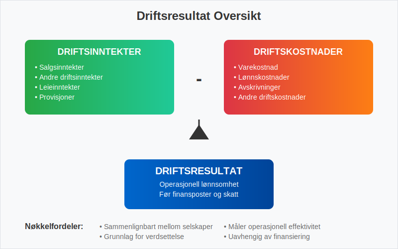
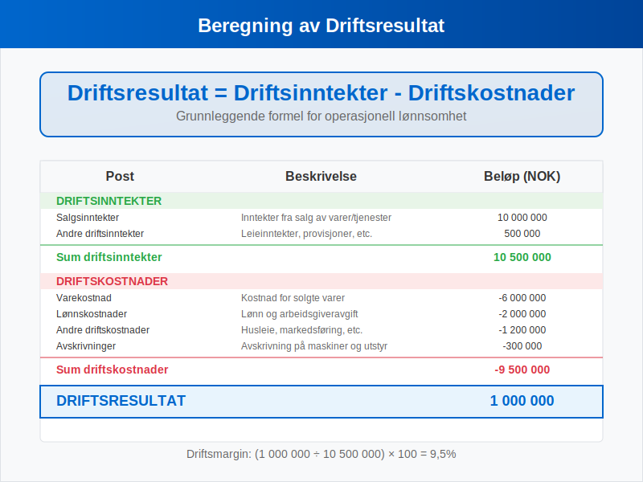
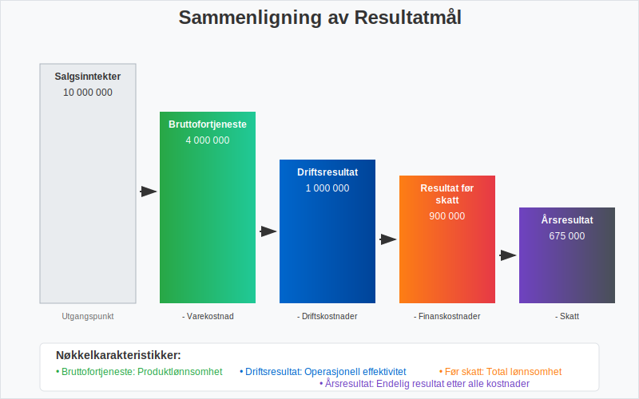
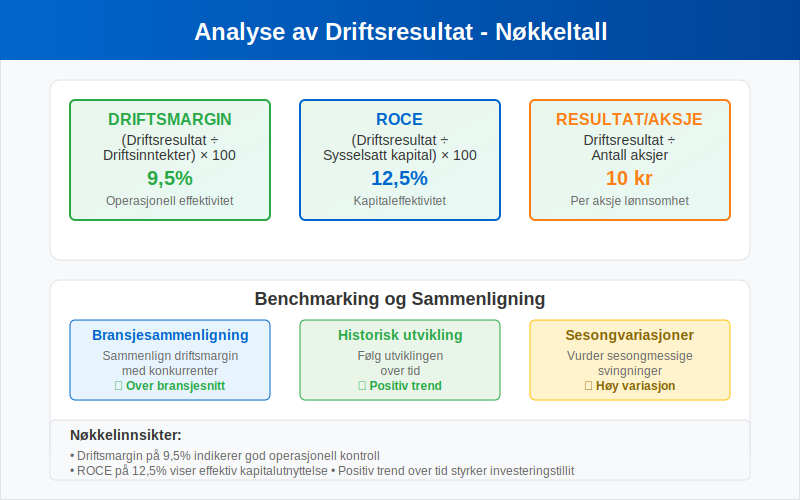
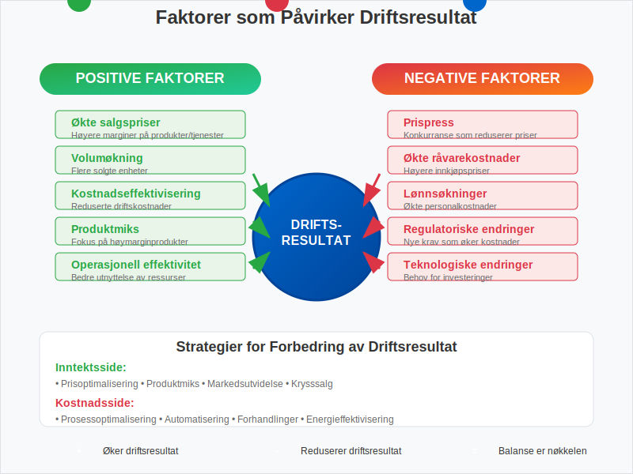
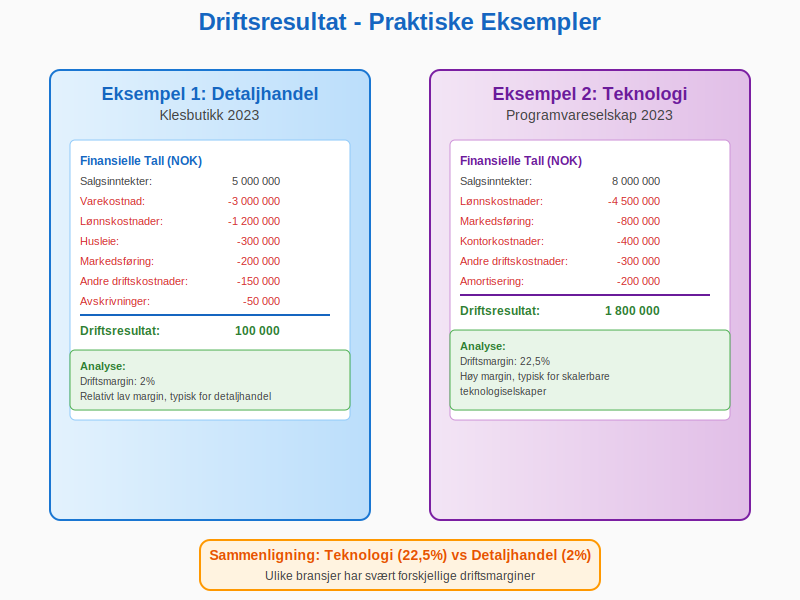
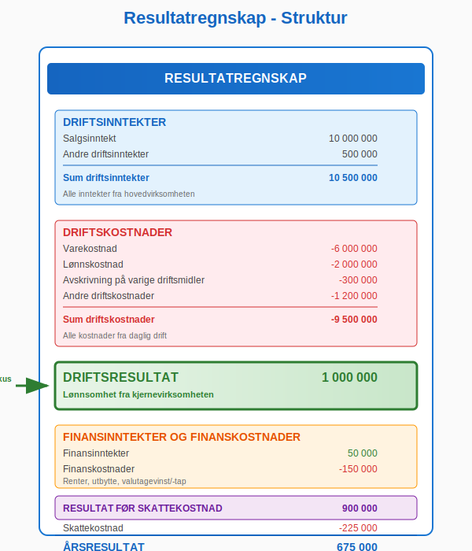
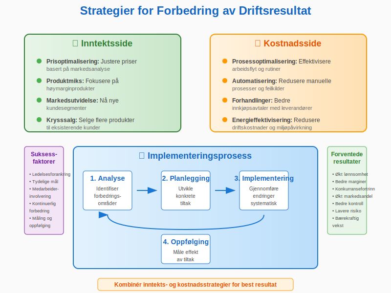
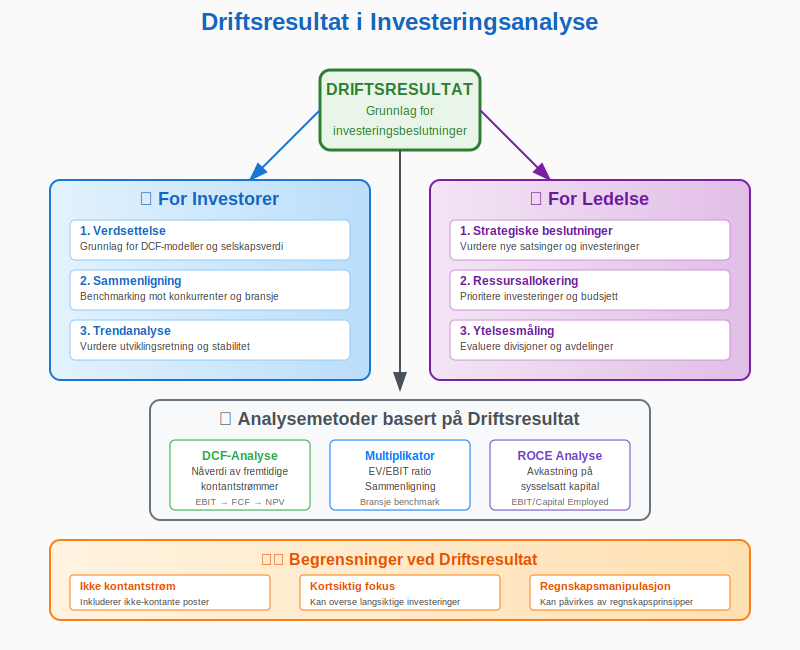
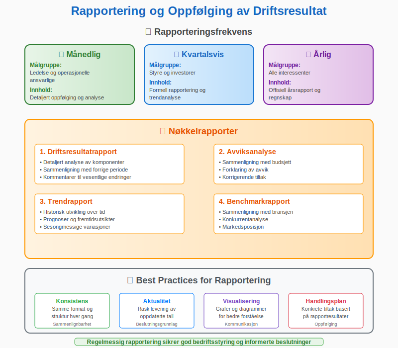

Driftsresultat er et av de viktigste nøkkeltallene i regnskap og viser bedriftens lønnsomhet fra kjernevirksomheten. Det representerer forskjellen mellom driftsinntekter og driftskostnader, og gir et klart bilde av hvor godt selskapet presterer operasjonelt før finansielle poster og skatt.
Driftsresultat danner grunnlaget for bunnlinjen, som viser det endelige nettoresultatet etter finansielle poster og skatt. Les mer om Bunnlinje. Samtidig tar driftsresultatet utgangspunkt i topplinjen (totale driftsinntekter), også kjent som Topplinje.
For en fullstendig oversikt over begrepet resultat, se Resultat.
Hva er Driftsresultat?
Driftsresultat, også kalt operasjonelt resultat eller EBIT (Earnings Before Interest and Taxes), måler bedriftens evne til å generere overskudd fra sin hovedvirksomhet. Dette resultatet viser hvor effektivt ledelsen driver selskapet og er uavhengig av finansieringsstruktur og skatteforhold.

Hovedkomponenter i Driftsresultat:
- Driftsinntekter: Alle inntekter fra selskapets hovedvirksomhet
- Driftskostnader: Alle kostnader knyttet til den daglige driften
- Avskrivninger: Verdifall på anleggsmidler
- Amortisering: Nedskrivning av immaterielle eiendeler
Beregning av Driftsresultat
Driftsresultat beregnes ved å trekke alle driftskostnader fra driftsinntektene. Her er den grunnleggende formelen:

Formel for Driftsresultat:
Driftsresultat = Driftsinntekter - Driftskostnader
Detaljert Beregning:
| Post | Beskrivelse | Eksempel (NOK) |
|---|---|---|
| Salgsinntekter | Inntekter fra salg av varer/tjenester | 10 000 000 |
| Andre driftsinntekter | Leieinntekter, provisjoner, etc. | 500 000 |
| Sum driftsinntekter | 10 500 000 | |
| Varekostnad | Kostnad for solgte varer | -6 000 000 |
| Lønnskostnader | Lønn og arbeidsgiveravgift | -2 000 000 |
| Andre driftskostnader | Husleie, markedsføring, etc. | -1 200 000 |
| Avskrivninger | Avskrivning på maskiner og utstyr | -300 000 |
| Sum driftskostnader | -9 500 000 | |
| Driftsresultat | 1 000 000 |
Driftsresultat vs Andre Resultatmål
Det er viktig å forstå forskjellen mellom driftsresultat og andre resultatmål for å få et helhetlig bilde av bedriftens økonomi. For en omfattende oversikt over alle typer fortjeneste og overskudd og hvordan de relaterer seg til hverandre, anbefaler vi våre detaljerte guider om disse konseptene.

Sammenligning av Resultatmål:
| Resultatmål | Inkluderer | Ekskluderer | Formål |
|---|---|---|---|
| Bruttofortjeneste | Salgsinntekter - Varekostnad | Alle andre kostnader | Måle produktlønnsomhet |
| Driftsresultat | Alle driftsposter | Finansposter og skatt | Måle operasjonell effektivitet |
| Resultat før skatt | Driftsposter + Finansposter | Skatt | Måle total lønnsomhet før skatt |
| Årsresultat | Alle poster | Ingenting | Måle endelig nettoresultat |
Analyse av Driftsresultat
Driftsresultat er grunnlaget for mange viktige analyser og nøkkeltall som hjelper investorer og ledelse med å vurdere bedriftens prestasjoner.

Viktige Nøkkeltall basert på Driftsresultat:
1. Driftsmargin
Formel: (Driftsresultat ÷ Driftsinntekter) × 100
Eksempel: (1 000 000 ÷ 10 500 000) × 100 = 9,5%
2. Avkastning på Sysselsatt Kapital (ROCE)
Formel: (Driftsresultat ÷ Sysselsatt kapital) × 100
3. Driftsresultat per Aksje
Formel: Driftsresultat ÷ Antall aksjer
Benchmarking og Sammenligning:
- Bransjesammenligning: Sammenlign driftsmargin med konkurrenter
- Historisk utvikling: Følg utviklingen over tid
- Sesongvariasjoner: Vurder sesongmessige svingninger
Faktorer som Påvirker Driftsresultat
Mange faktorer kan påvirke driftsresultatet, både positive og negative. Forståelse av disse er viktig for god bedriftsstyring.

Positive Faktorer:
- Økte salgspriser: Høyere marginer på produkter/tjenester
- Volum økning: Flere solgte enheter
- Kostnadseffektivisering: Reduserte driftskostnader
- Produktmiks: Fokus på høymarginprodukter
- Operasjonell effektivitet: Bedre utnyttelse av ressurser
Negative Faktorer:
- Prispress: Konkurranse som reduserer priser
- Økte råvarekostnader: Høyere innkjøpspriser
- Lønnsøkninger: Økte personalkostnader
- Regulatoriske endringer: Nye krav som øker kostnader
- Teknologiske endringer: Behov for investeringer
Praktiske Eksempler fra Norsk Næringsliv
La oss se på hvordan driftsresultat fungerer i praksis gjennom konkrete eksempler fra ulike bransjer.

Eksempel 1: Detaljhandel
Situasjon: En klesbutikk med følgende tall for 2023:
| Post | Beløp (NOK) |
|---|---|
| Salgsinntekter | 5 000 000 |
| Varekostnad | -3 000 000 |
| Lønnskostnader | -1 200 000 |
| Husleie | -300 000 |
| Markedsføring | -200 000 |
| Andre driftskostnader | -150 000 |
| Avskrivninger | -50 000 |
| Driftsresultat | 100 000 |
Analyse:
- Driftsmargin: (100 000 ÷ 5 000 000) × 100 = 2%
- Relativt lav margin, typisk for detaljhandel
Eksempel 2: Teknologiselskap
Situasjon: Et programvareselskap med følgende resultater:
| Post | Beløp (NOK) |
|---|---|
| Salgsinntekter | 8 000 000 |
| Lønnskostnader | -4 500 000 |
| Markedsføring | -800 000 |
| Kontorkostnader | -400 000 |
| Andre driftskostnader | -300 000 |
| Amortisering | -200 000 |
| Driftsresultat | 1 800 000 |
Analyse:
- Driftsmargin: (1 800 000 ÷ 8 000 000) × 100 = 22,5%
- Høy margin, typisk for skalerbare teknologiselskaper
Driftsresultat i Resultatregnskapet
Driftsresultatet er en sentral del av resultatregnskapet og følger en standardisert oppstilling i henhold til norske regnskapsstandarder.

Standardoppstilling av Resultatregnskap:
RESULTATREGNSKAP
DRIFTSINNTEKTER
Salgsinntekt 10 000 000
Andre driftsinntekter 500 000
Sum driftsinntekter 10 500 000
DRIFTSKOSTNADER
Varekostnad -6 000 000
Lønnskostnad -2 000 000
Avskrivning på varige driftsmidler -300 000
Andre driftskostnader -1 200 000
Sum driftskostnader -9 500 000
DRIFTSRESULTAT 1 000 000
FINANSINNTEKTER OG FINANSKOSTNADER
Finansinntekter 50 000
Finanskostnader -150 000
Netto finansposter -100 000
RESULTAT FØR SKATTEKOSTNAD 900 000
Skattekostnad -225 000
ÅRSRESULTAT 675 000
Forbedring av Driftsresultat
Bedrifter kan implementere ulike strategier for å forbedre driftsresultatet og øke lønnsomheten.

Strategier for Forbedring:
Inntektsside:
- Prisoptimalisering: Justere priser basert på markedsanalyse
- Produktmiks: Fokusere på høymarginprodukter
- Markedsutvidelse: Nå nye kundesegmenter
- Krysssalg: Selge flere produkter til eksisterende kunder
Kostnadsside:
- Prosessoptimalisering: Effektivisere arbeidsflyt
- Automatisering: Redusere manuelle prosesser
- Forhandlinger: Bedre innkjøpsavtaler
- Energieffektivisering: Redusere driftskostnader
Implementering av Forbedringstiltak:
- Analyse: Identifiser forbedringsområder
- Planlegging: Utvikle konkrete tiltak
- Implementering: Gjennomføre endringer
- Oppfølging: Måle effekt av tiltak
Driftsresultat og Investeringsbeslutninger
Driftsresultat er et viktig verktøy for investeringsbeslutninger og bedriftsvurdering.

Bruk i Investeringsanalyse:
For Investorer:
- Verdsettelse: Grunnlag for DCF-modeller
- Sammenligning: Benchmarking mot konkurrenter
- Trendanalyse: Vurdere utviklingsretning
For Ledelse:
- Strategiske beslutninger: Vurdere nye satsinger
- Ressursallokering: Prioritere investeringer
- Ytelsesmåling: Evaluere divisjoner/avdelinger
Begrensninger ved Driftsresultat:
- Ikke kontantstrøm: Inkluderer ikke-kontante poster
- Kortsiktig fokus: Kan overse langsiktige investeringer
- Regnskapsmanipulasjon: Kan påvirkes av regnskapsprinsipper
Rapportering og Oppfølging
Regelmessig rapportering og oppfølging av driftsresultat er essensielt for god bedriftsstyring.

Rapporteringsfrekvens:
- Månedlig: Detaljert oppfølging for ledelse
- Kvartalsvis: Rapportering til styre og investorer
- Årlig: Offisiell årsrapport og regnskap
Nøkkelrapporter:
- Driftsresultatrapport: Detaljert analyse av komponenter
- Avviksanalyse: Sammenligning med budsjett
- Trendrapport: Historisk utvikling og prognoser
- Benchmarkrapport: Sammenligning med bransjen
Regnskapsregler og Standarder
Driftsresultat må beregnes i henhold til gjeldende regnskapsstandarder og -regler.
Relevante Regelverk:
- Regnskapsloven: Grunnleggende krav til regnskapsføring
- Norske regnskapsstandarder (NRS): Detaljerte retningslinjer
- IFRS: For børsnoterte selskaper
- God regnskapsskikk: Etablert praksis
Viktige Prinsipper:
- Sammenlignbarhet: Konsistent behandling over tid
- Forsiktighet: Konservativ tilnærming til inntektsføring
- Periodisering: Kostnader og inntekter i riktig periode
- Vesentlighet: Fokus på betydningsfulle poster
Konklusjon
Driftsresultat er et fundamentalt mål på bedriftens operasjonelle lønnsomhet og effektivitet. Det gir verdifull innsikt i hvor godt selskapet presterer i sin kjernevirksomhet, uavhengig av finansieringsstruktur og skatteforhold.
Hovedpunkter å Huske:
- Driftsresultat måler lønnsomhet fra hovedvirksomheten
- Beregning er enkelt: Driftsinntekter minus driftskostnader
- Analyse krever sammenligning med historiske tall og konkurrenter
- Forbedring kan oppnås gjennom inntektsøkning eller kostnadsreduksjon
- Rapportering må følge etablerte regnskapsstandarder
Ved å forstå og aktivt arbeide med driftsresultat kan bedrifter ta bedre beslutninger, forbedre lønnsomheten og skape mer verdi for alle interessenter.